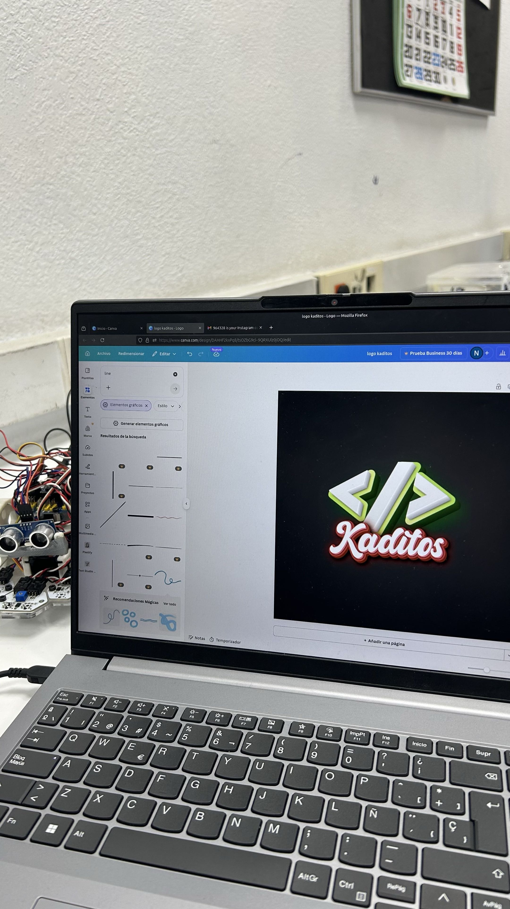
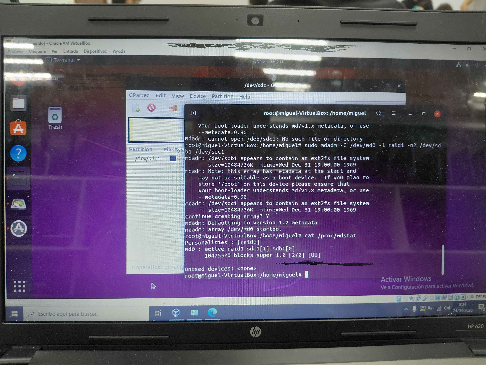
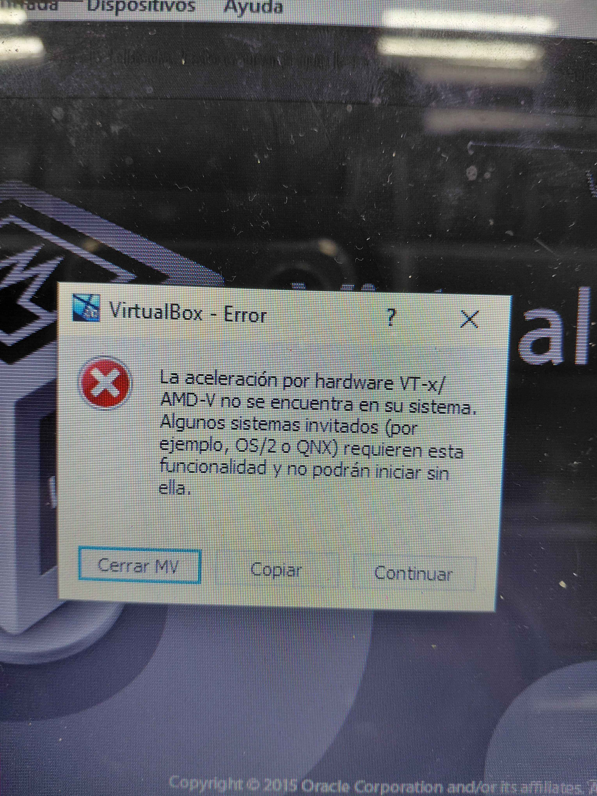
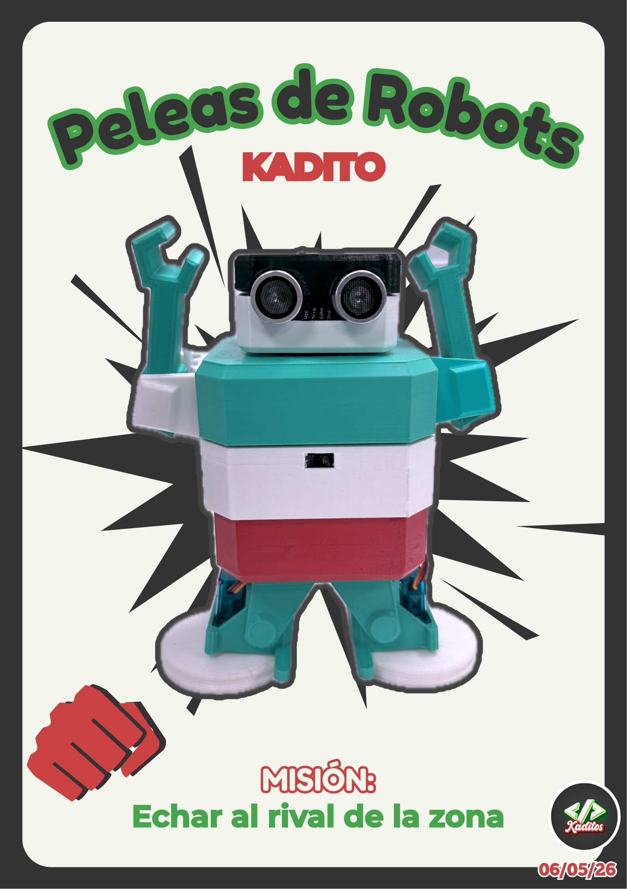
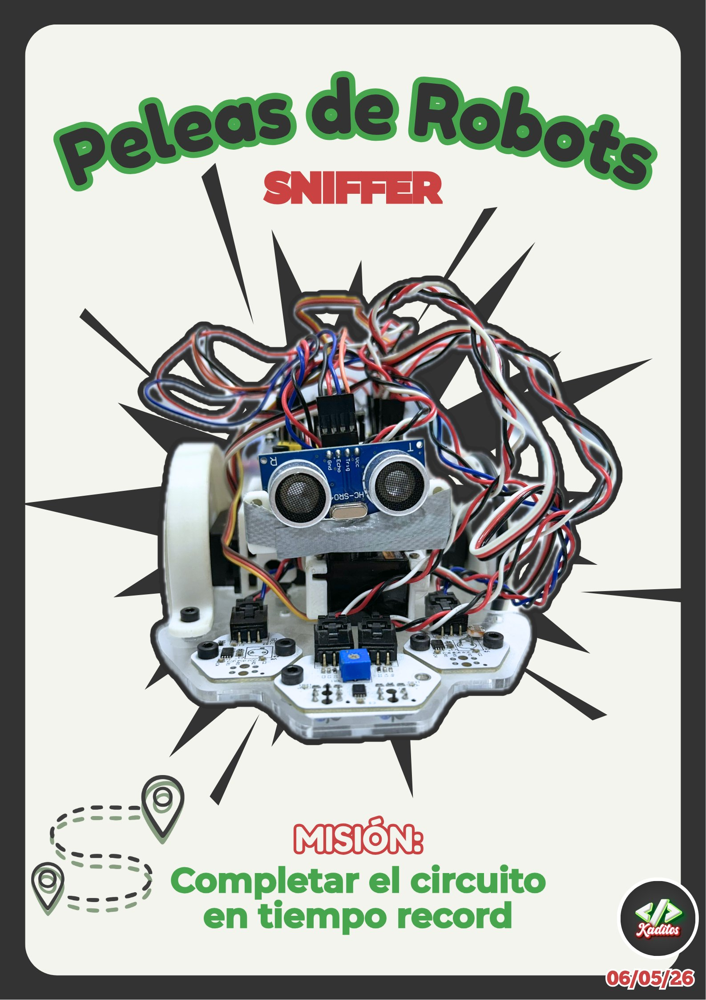
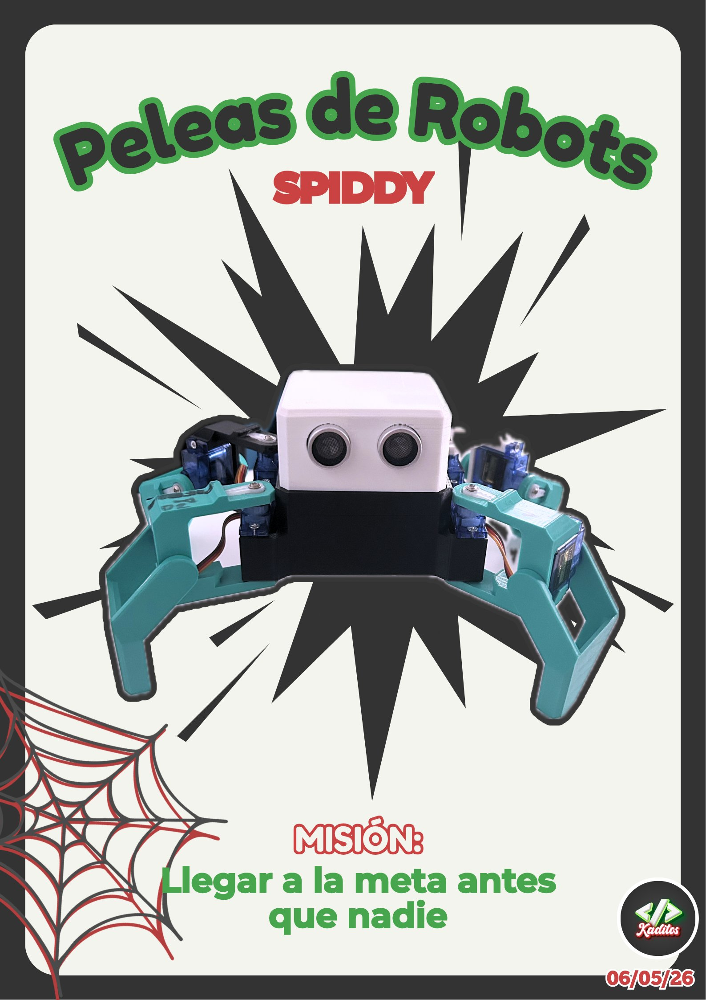

Resumen
Laburpena
Summary
A lo largo de este documento se describen los objetivos planteados, las fases de desarrollo, los obstáculos encontrados y las soluciones aplicadas, así como las decisiones estratégicas adoptadas por el equipo para garantizar la finalización satisfactoria del proyecto dentro de los plazos establecidos.
Este reto supuso un importante ejercicio de trabajo en equipo, resolución de problemas bajo presión y adaptación ante imprevistos tanto técnicos como logísticos.
Dokumentu honetan, proiektuaren hasieran ezarritako helburuak, garapenaren faseak, aurkitutako oztopoak eta aplikatutako soluzioak deskribatzen dira, baita taldeak proiektua epeen barruan arrakastaz bukatzeko hartu zituen erabaki estrategikoak ere.
Erronka honek talde-lanean, presiopean arazoak konpontzean eta ezusteko teknikoen zein logistikoen aurrean egokitzeko orduan ikasteko ariketa garrantzitsua suposatu zuen.
Throughout this document, we describe the objectives set out at the beginning of the project, the phases of development, the obstacles encountered and the solutions applied, as well as the strategic decisions made by the team to ensure the successful completion of the project within the established deadlines.
This challenge proved to be a significant exercise in teamwork, problem-solving under pressure and adaptability in the face of both technical and logistical setbacks.
Procedimiento
Prozedura
Procedure
El proyecto comenzó con una traba importante: la falta de piezas necesarias para construir el robot Otto y el robot araña. Esta carencia obligó al equipo a reajustar el orden de trabajo y concentrar los esfuerzos iniciales en los componentes disponibles: el robot sigue líneas y el módulo de ultrasonidos.
Módulo de ultrasonidos: resultó ser el proceso más fluido de toda la fase inicial. El equipo logró ponerlo en funcionamiento correctamente en el primer intento, lo que permitió disponer de un componente operativo desde el comienzo y ganar confianza en un contexto de inicio complicado.
Robot sigue líneas: su puesta a punto presentó numerosas complicaciones. Se detectaron dos problemas principales: inversión de la detección (el robot seguía la línea blanca en lugar de la negra) e interferencias de sombra (en determinadas condiciones de iluminación, detectaba su propia sombra como si fuera la línea negra). Tras múltiples ajustes en la calibración de los sensores y varios ciclos de prueba y error, se consiguió que el robot siguiera la línea negra de forma estable y precisa bajo distintas condiciones de iluminación.
Proiektua hasiera txar batekin hasi zen: Otto robota eta armiarma-robota eraikitzeko behar ziren piezak falta ziren. Horrek taldea lan-ordena berrantolatera behartu zuen, eta hasierako ahaleginak materiala jadanik eskuragarri zeuden osagaietan zentratu ziren: lerro-jarrailean eta ultrasoinu-moduluan.
Ultrasoinu modulua: konfigurazioa hasierako fasearen prozesurik bidezkoenena izan zen. Taldeak lehenengo saiakeran arrakastaz jarri zuen martxan, proiektuaren hasieratik osagai funtzional bat eskuragarri utziz eta zaila zen hasiera batean konfiantza berreskuratzen lagunduz.
Lerro-jarraileen robota: konfiguratzeak arazo ugari aurkeztu zituen. Bi arazo nagusi identifikatu ziren: detekzioa alderantziz (robotak lerro beltza jarraitu beharrean lerro zuria jarraitzen zuen) eta itzalaren interferentzia (argiztapen-baldintza batzuetan, robotak bere itzala lerro beltza balitz bezala detektatzen zuen). Sentsore-kalibrazio doikuntza ugari eta proba-saio anitz ondoren, robota lerro beltza fidagarriro eta zehaztasunez jarraitzeko gai zen argiztapen-baldintza desberdinetan.
The project got off to a difficult start due to a significant logistical issue: a shortage of components required to build the Otto robot and the spider robot. This forced the team to reorganise its workflow and focus initial efforts on the available components: the line-following robot and the ultrasound module.
Ultrasound module: its configuration proved to be the most straightforward process of the entire initial phase. The team successfully brought it into operation on the first attempt, providing a fully functional component from the outset and offering a much-needed boost in confidence.
Line-following robot: setting it up presented numerous complications. Two main issues were identified: inverted detection (the robot was following the white line instead of the black one) and shadow interference (under certain lighting conditions, the robot detected its own shadow as if it were the black line). After multiple sensor calibration adjustments and several rounds of testing and troubleshooting, the robot was eventually able to follow the black line reliably and accurately under varying lighting conditions.

Cuatro días después del inicio del proyecto, llegaron las piezas necesarias para continuar con el montaje del robot Otto y del robot araña. El equipo procedió de inmediato al ensamblaje del Otto; sin embargo, durante el proceso se detectó una nueva incidencia: los motores disponibles no eran de 360 grados, requisito imprescindible para el correcto funcionamiento de las piernas del robot. Esta situación obligó a detener el montaje y esperar a la semana siguiente para recibir los componentes adecuados.
Este tipo de contratiempos logísticos supusieron una fuente de retrasos constante y una carga de estrés adicional para el equipo, que en múltiples ocasiones vio su avance condicionado por factores externos completamente ajenos a sus capacidades técnicas.
Proiektua hasi eta lau egunera, Otto eta armiarma-robota muntatzeko beharrezkoak ziren piezak iritsi ziren. Taldeak berehala hasi zen Ottoa muntatzen; hala ere, prozesuan arazo berri bat sortu zen: eskuragarri zeuden motorrak ez ziren 360 gradukoak, robotaren hankak behar bezala funtzionatzeko ezinbesteko baldintza. Horrek taldea muntaketa geldiaratera eta aste berrira arte egokiak ziren osagaiak zain egoten behartu zuen.
Logistikako etengabeko atzerapauso hauek taldearentzat etengabeko atzerapen-iturri eta presio gehigarria suposatu zuten, eta askotan bere aurrerapenak taldeak kontrolatu ezin zituen kanpoko faktoreen mende egon zen.
Four days after the project began, the parts required to continue with the Otto and spider robot assembly arrived. The team proceeded immediately with the Otto assembly; however, a new issue arose during the process: the available motors were not 360-degree motors, which are essential for the correct functioning of the robot's legs. This forced the team to halt the assembly and wait until the following week to receive the appropriate components.
These recurring logistical setbacks were a constant source of delays and added pressure on the team, which on multiple occasions found its progress held back by external factors entirely beyond its control.
En paralelo a las tareas de robótica, el equipo trabajó en la infraestructura de red y seguridad informática.
Portal cautivo en el router: se tomó un router y se configuró con un portal cautivo con el objetivo de gestionar y controlar el tráfico de red de manera centralizada. Esta solución permitió tener una mayor supervisión sobre las conexiones y los accesos dentro de la red del proyecto.
Implementación de RAID en Ubuntu virtualizado: se utilizó un ordenador portátil con sistema operativo Windows sobre el que se instaló VirtualBox. Dentro de la máquina virtual se desplegó un sistema Ubuntu al que se le configuró un sistema RAID, con el fin de garantizar redundancia y mayor seguridad en el almacenamiento de datos.
Robotikako lanen aldamenean, taldeak sare eta zibersegurtasun azpiegituran lan egin zuen.
Bideratzaileko atari kautiboa: bideratzaile bat atari kautibo batekin konfiguratu zen sare-trafikoaren kudeaketa eta jarraipena zentralizatzeko. Soluzio honek proiektuko sareko konexio eta sarbideen gaineko gainbegiratze handiagoa ahalbidetzen zuen.
RAID inplementazioa birtualizatutako Ubuntu sisteman: Windows sistema eragilea zuen ordenagailu eramangarri bat VirtualBox-en ostalari gisa erabili zen, eta bertan Ubuntu makina birtual bat zabaldu zen. Ingurune birtual horretan RAID sistema bat konfiguratu zen datuen erredundantzia bermatzeko eta biltegiratze-segurtasuna hobetzeko.
In parallel with the robotics tasks, the team worked on the network and cybersecurity infrastructure.
Captive portal on the router: a router was configured with a captive portal in order to centralise the management and monitoring of network traffic. This solution enabled greater supervision of connections and access within the project network.
RAID implementation on a virtualised Ubuntu system: a Windows laptop was used as the host machine for VirtualBox, on which an Ubuntu virtual machine was deployed. A RAID system was then configured within this virtual environment to ensure data redundancy and improve overall storage security.

Una vez recibidas las piezas pendientes, entre ellas los motores de 360 grados y una placa base adicional, el equipo retomó el montaje con mayor impulso. En esta fase se completaron con éxito: la configuración definitiva del módulo de ultrasonidos, el robot sigue líneas y el circuito de carrera; el montaje completo del robot Otto verificando el funcionamiento individual de cada motor; y la detección y resolución de un problema de tensión excesiva en el motor de uno de los brazos del Otto.
Finalizado el montaje, se inició la fase de programación trabajando motor por motor y componente por componente. Durante este proceso se observó un problema de sobrecalentamiento en los motores, lo que obligó al equipo a establecer pausas periódicas para evitar daños en el hardware.
Incidencia con la placa base: al día siguiente de iniciada la programación, con casi todas las partes del Otto ya operativas (a excepción de una de las ruedas y la cabeza), se produjo una incidencia crítica: la placa base comenzó a emitir humo. El equipo actuó con rapidez, apagando el sistema de inmediato y dejándolo en reposo durante un tiempo prudencial. Mientras el hardware se recuperaba, el equipo aprovechó el tiempo para avanzar en tareas de marketing vinculadas al proyecto.
Zain zeuden piezak jaso ondoren, besteak beste 360 graduko motorrak eta plaka base gehigarri bat, taldeak berriro indar berriarekin hasi zuen muntaketa. Fase honetan arrakastaz burutu ziren: ultrasoinu moduluaren, lerro-jarraileen robotaren eta lasterketa-zirkuituaren behin betiko konfigurazioa; Otto robotaren muntaketa osoa, motor bakoitza banan-banan probatuz; eta robotaren beso bateko motorean gehiegizko tentsioaren arazo baten identifikazioa eta konponketa.
Muntaketa amaitutakoan, programazio-fasea hasi zen, motor eta osagai bakoitza banan-banan landuz. Prozesu honetan, motorrek bero gehiegizko sortzen zutela ikusi zen, eta taldeak aldizka atseden-tarteak planifikatu behar izan zituen hardware-kalteak saihesteko.
Plaka basearen matxura: programazioa hasi eta biharamunean, Ottoko ia zati guztiak funtzionatzen zutelarik, gertakizun kritiko bat gertatu zen: plaka baseak ke egiten hasi zen. Taldeak azkar erantzun zuen, sistema berehala itzaliz eta denbora luzez atseden uzten. Hardware-a berreskuratzen zen bitartean, taldeak proiektuarekin lotutako marketin-materialetan aurreratu zuen.
Once the outstanding parts had been received, including the 360-degree motors and an additional motherboard, the team resumed assembly with renewed momentum. During this phase, the following tasks were successfully completed: final configuration of the ultrasound module, line-following robot and racing circuit; full assembly of the Otto robot with individual motor testing; and identification and resolution of an issue involving excessive tension in one of the arm motors.
Once assembly was complete, the programming phase began, working through each motor and component one by one. Significant overheating was observed in the motors, which required the team to schedule regular rest periods to prevent hardware damage.
Motherboard failure: the day after programming began, with almost all parts of the Otto functioning correctly, a critical incident occurred: the motherboard began to emit smoke. The team reacted swiftly, immediately shutting down the system and allowing it to rest for a considerable period. While the hardware recovered, the team used the downtime productively to work on marketing materials related to the project.
Hacia el final del período de desarrollo, surgieron algunas incidencias ajenas al proyecto que consumieron parte del tiempo del equipo. Pese a ello, el tutor realizó una auditoría del estado del proyecto y el resultado fue positivo: el proyecto fue considerado aprobado.
Ante este escenario, el equipo tomó una decisión estratégica consensuada: dado que el nivel mínimo de exigencia estaba cubierto, se priorizaría la mejora progresiva de la calificación mediante otras entregas y tareas complementarias, dejando el trabajo sobre los robots pendientes para la fase final en caso de que el tiempo lo permitiera. Las líneas de trabajo priorizadas fueron: gestión y actualización de redes sociales del proyecto, elaboración y mejora de la documentación técnica, y otras tareas de presentación y comunicación del proyecto.
Esta decisión refleja la capacidad del equipo para adaptar su estrategia ante las circunstancias, priorizando los resultados globales del proyecto por encima de la finalización de tareas específicas.
Garapen-aldiaren amaierantz, proiektuarekin loturarik ez zuten hainbat gorabehera sortu ziren eta taldeak erabilgarri zuen denboraren zati bat kontsumitu zuten. Hala ere, tutorea aurrerakuntzaren auditoria bat egin zuen eta emaitza positiboa izan zen: proiektua gainditutzat jo zen.
Emaitza hori ikusita, taldeak erabaki estrategiko kolektibo bat hartu zuen: gutxieneko eskakizunak betetzen zirenez, lehentasuna emango zitzaion nota progresiboki hobetzeari entrega osagarri eta zeregin osagarrien bidez, gainerako roboten lana azken fasean utziz, denbora bada. Lehenetsi ziren lan-eremuak honakoak ziren: proiektuaren sare sozialen kudeaketa eta eguneratzea, dokumentazio teknikoaren prestaketa eta hobekuntza, eta proiektuaren aurkezpen eta komunikazio-zereginen beste hainbat alderdi.
Towards the end of the development period, a number of issues unrelated to the project arose and consumed part of the team's available time. Despite this, the project supervisor conducted a progress audit and the outcome was positive: the project was deemed to have met the passing standard.
In light of this result, the team made a collective strategic decision: since the minimum requirements had already been met, priority would be given to progressively improving the overall grade through complementary deliverables and tasks, leaving the remaining robot work for the final stage should time allow. The areas prioritised were: management and updating of the project's social media presence, preparation and improvement of technical documentation, and other project presentation and communication tasks.
This decision reflects the team's ability to adapt its strategy to evolving circumstances, prioritising overall project outcomes over the completion of specific individual tasks.
Problemas Encontrados
Aurkitutako Arazoak
Problems Encountered
La falta de piezas al inicio y durante el proyecto generó retrasos significativos, obligando al equipo a reajustar constantemente el orden de trabajo y a depender de factores externos ajenos a sus capacidades técnicas.
Hasieran eta proiektuan zehar piezen faltak atzerapen handiak eragin zituen, taldea lan-ordena etengabe berrantolatzera behartu zuen.
The lack of components at the start and during the project caused significant delays, forcing the team to constantly reorganise its workflow and depend on external factors beyond its control.
Solución: se reajustó el orden de trabajo centrando los esfuerzos en los componentes disponibles mientras se esperaban las piezas pendientes.
Konponbidea: lan-ordena berrantolatu zen, eskuragarri zeuden osagaietan ahaleginak zentratuz.
Solution: the workflow was reorganised to focus efforts on the available components while waiting for the missing parts.
Los motores disponibles para el robot Otto no eran de 360 grados, requisito imprescindible para el correcto funcionamiento de sus piernas. Esto paralizó el montaje durante varios días hasta recibir los componentes correctos.
Otto roboterako eskuragarri zeuden motorrak ez ziren 360 gradukoak. Horrek muntaketa egun batzuez geldiarazi zuen osagai egokiak jaso arte.
The available motors for the Otto robot were not 360-degree motors, which are essential for the correct functioning of its legs. This brought the assembly to a standstill for several days until the correct components arrived.
Solución: se esperó a recibir los motores de 360 grados y se aprovechó el tiempo avanzando en otras tareas del proyecto (redes, sigue líneas).
Konponbidea: 360 graduko motor egokiak jaso arte itxaron zen, eta denbora beste zereginen bidez aprobetxatu zen.
Solution: the team waited for the correct 360-degree motors and used the time to advance on other project tasks.
Las interferencias por sombra y la inversión de detección exigieron múltiples ciclos de calibración de los sensores bajo distintas condiciones de iluminación antes de conseguir un funcionamiento estable.
Itzalaren interferentziak eta alderantzizko detekzioak kalibrazio-ziklo ugari behar izan zituzten argiztapen-baldintza desberdinetan funtzionamendu egonkorra lortu aurretik.
Shadow interference and inverted detection required multiple sensor calibration cycles under varying lighting conditions before achieving stable operation.
Solución: ajustes iterativos en la calibración de los sensores hasta lograr que el robot siguiera la línea negra de forma estable y precisa bajo distintas condiciones de iluminación.
Konponbidea: sentsore-kalibrazioan doikuntza iteratiboak egin ziren, argiztapen-baldintza desberdinetan funtzionamendu egonkorra lortu arte.
Solution: iterative adjustments to sensor calibration until the robot was able to follow the black line reliably under varying lighting conditions.
La programación intensiva generó calor excesivo en los motores del robot Otto, suponiendo un riesgo real de daño permanente en el hardware.
Programazio-saio intentsiboek berotze gehiegizkoa eragin zuten Otto robotaren motorrengan, hardware-kalte iraunkorraren arrisku erreala suposatuz.
Intensive programming sessions generated excessive heat in the Otto robot's motors, posing a real risk of permanent hardware damage.
Solución: se planificaron pausas técnicas periódicas durante los ciclos de prueba de hardware para que los motores pudieran enfriarse antes de continuar.
Konponbidea: hardware-proba zikloetan aldizka atseden teknikoak planifikatu ziren motorrak hoztu ahal izateko.
Solution: regular technical rest periods were scheduled during hardware testing cycles to allow the motors to cool down before continuing.
Con casi todas las partes del Otto ya operativas, la placa base comenzó a emitir humo, obligando a una parada de emergencia inmediata. Fue uno de los momentos más críticos del proyecto.
Otto-ko ia zati guztiak funtzionatzen zutelarik, plaka baseak ke egiten hasi zen, larrialdizko itzalketa berehala behartu zuelarik. Proiektuko une kritikoenetako bat izan zen.
With almost all parts of the Otto functioning correctly, the motherboard began to emit smoke, requiring an immediate emergency shutdown. It was one of the most critical moments of the project.
Solución: el equipo apagó el sistema de inmediato y lo dejó en reposo durante un tiempo prudencial. El tiempo de espera se aprovechó para avanzar en las tareas de marketing del proyecto.
Konponbidea: taldeak sistema berehala itzali zuen eta denbora luzez atseden utzi zuen. Itxaronaldi hori proiektuaren marketin-materialetan aurreratzeko aprobetxatu zen.
Solution: the team immediately shut down the system and allowed it to rest for a considerable period. The downtime was used productively to advance on project marketing materials.
Al intentar arrancar la máquina virtual en VirtualBox, el sistema mostró un error indicando que la aceleración por hardware VT-x/AMD-V no estaba disponible. Esto impidió el arranque normal de la VM en el equipo afectado.
VirtualBox-en makina birtual bat abiarazten saiatzean, sistemak errore bat erakutsi zuen VT-x/AMD-V hardware-azelerazioa ez zegoela eskuragarri adieraziz. Horrek makina birtualaren abiarazte normala eragotzi zuen.
When attempting to start the virtual machine in VirtualBox, the system displayed an error indicating that VT-x/AMD-V hardware acceleration was not available, preventing the VM from booting normally on the affected machine.
Solución: se habilitó la virtualización en la BIOS/UEFI del equipo y se continuó con la configuración del entorno Ubuntu para el RAID.
Konponbidea: birtualizazioa gaituriko BIOS/UEFI-n eta Ubuntu ingurunea RAID-erako konfiguratzen jarraitu zen.
Solution: virtualisation was enabled in the BIOS/UEFI of the machine, allowing the Ubuntu environment to be configured for the RAID setup.

Conclusiones
Ondorioak
Conclusions



Aunque no todos los objetivos planteados inicialmente pudieron completarse en su totalidad dentro del tiempo disponible, los avances logrados en robótica y redes son considerables, y el proyecto ha sido evaluado satisfactoriamente por el tutor responsable.
La experiencia ha puesto de manifiesto la importancia de una gestión logística eficiente, la necesidad de contar con planes de contingencia ante imprevistos y el valor del trabajo en equipo para superar adversidades. Todos estos aprendizajes resultan de gran utilidad de cara a futuros proyectos de mayor envergadura.
Hasierako helburu guztiak ezin baziren ere guztiz bete erabilgarri zegoen denboran, robotikan eta sareetan lortutako aurrerapenak nabarmenak dira, eta proiektua tutorea arduradunaren aldetik gogobetez ebaluatu da.
Esperientziak logistikaren kudeaketa eraginkorren garrantzia nabarmendu du, ezustekoen aurrean kontingentzia-planak izateko beharra eta zailtasunak gainditzeko talde-lanaren balioa. Ikaskuntza hauek guztiak etorkizuneko eskala handiko proiektuetan oso baliagarriak izango dira.
Although not all of the initial objectives could be fully completed within the available time, the progress achieved in both robotics and networking is considerable, and the project has been evaluated satisfactorily by the supervising tutor.
The experience has highlighted the importance of efficient logistics management, the need for contingency plans when facing unexpected setbacks, and the value of teamwork in overcoming adversity. All of these lessons will prove highly valuable in future, larger-scale projects.
Este reto tecnológico ha sido una montaña rusa de emociones. Si algo he aprendido en estas semanas es que, por mucho que planifiques, siempre hay factores externos que pueden cambiarlo todo, y lo más importante es cómo reaccionas ante ellos.
Como responsable del montaje de los robots, mi "enemigo" principal fue la falta de piezas. Fue muy frustrante sentir que el grupo no avanzaba por mi culpa, cuando en realidad el problema era que el material no llegaba o no era el adecuado, como nos pasó con los motores del Otto. Al final, cuando la placa base empezó a echar humo, me lo tomé con humor. Eran tantas desgracias seguidas que fue como, reír por no llorar; era la única forma de seguir adelante sin desanimarnos del todo.
A pesar de los problemas técnicos, hay dos puntos que me gustaría destacar:
Aunque mi fuerte era el montaje, estoy muy feliz con el resultado de los carteles y el material visual. No estaba segura de si me quedarían bien, pero al final ver que el proyecto tiene una identidad visual bonita me ha dado mucha satisfacción.
Soy sincera y admito que me hubiera gustado terminar todos los robots para sacar un 10. Me queda un poco de "espinita" por no haber llegado a la perfección por culpa de los retrasos logísticos, pero entiendo que, dadas las circunstancias, estar aprobados ya es un éxito de equipo.
En resumen, aunque ha sido un proceso difícil y por momentos algo estresante, me quedo con nuestra capacidad para sacar el trabajo adelante y no rendirnos cuando las cosas se pusieron feas.
Erronka teknologiko hau emozioz beteriko errusiar mendia izan da. Aste hauetan zerbait ikasi badut, planifikatu arren, beti daude dena alda dezaketen kanpoko faktoreak, eta garrantzitsuena da nola erreakzionatzen duzun horien aurrean.
Roboten muntaketaren arduradun gisa, piezarik eza izan zen nire "etsai" nagusia. Etsigarria izan zen taldeak nire erruz aurrera egiten ez zuela sentitzea, baina arazoa zen materiala ez zela iristen edo ez zela egokia, Ottoren motorrekin gertatu zitzaigun bezala. Azkenean, plaka nagusia kea botatzen hasi zenean, umoretsu hartu nuen. Hainbeste zoritxar ziren jarraian, ezen negar ez egitearren barre egitea izan baitzen; hori zen aurrera jarraitzeko modu bakarra, gu erabat adoregabetu gabe.
Arazo teknikoak gorabehera, bi puntu nabarmendu nahi nituzke:
Nire indarra muntaketa bazen ere, oso pozik nago kartelen eta ikusizko materialaren emaitzarekin. Ez nekien ondo geratuko ote zitzaizkidan, baina azkenean proiektuak nortasun bisual polita duela ikusteak poz handia eman dit.
Zintzoa naiz eta onartzen dut robot guztiak bukatzea gustatuko zitzaidala 10 bat ateratzeko. "Arantza" pixka bat geratzen zait atzerapen logistikoen erruz perfekziora iritsi ez naizelako, baina ulertzen dut, egoera ikusita, onartuta egotea talde-arrakasta bat dela.
Laburbilduz, prozesu zaila eta estresagarria izan den arren, lana aurrera ateratzeko eta gauzak itsusitu zirenean amore ez emateko gaitasunarekin geratzen naiz.
This technological challenge has been an emotional rollercoaster. If there's one thing I've learned in these weeks, it's that no matter how much you plan, there are always external factors that can change everything, and the most important thing is how you react to them.
As the person in charge of assembling the robots, my main "enemy" was the lack of parts. It was very frustrating to feel that the group wasn't making progress because of me, when in reality the problem was that the materials weren't arriving or weren't suitable, as happened with the Otto motors. In the end, when the motherboard started smoking, I took it with humor. There were so many misfortunes in a row that it was like, laugh to avoid crying; it was the only way to keep going without getting completely discouraged.
Despite the technical problems, there are two points I would like to highlight:
Although my strength was in editing, I am very happy with the result of the posters and visual material. I wasn't sure if they would turn out well, but in the end, seeing that the project has a beautiful visual identity has given me a lot of satisfaction.
I am honest and admit that I would have liked to finish all the robots to get a 10. I have a bit of a "thorn" left for not having reached perfection due to logistical delays, but I understand that, given the circumstances, being approved is already a team success.
In summary, although it has been a difficult and at times somewhat stressful process, I take away our ability to get the job done and not give up when things got tough.
Si tuviera que describir esta experiencia con una sola palabra, sería adaptación.
Desde el principio, el proyecto estuvo lleno de problemas que no dependían de nosotros. El momento más difícil fue ver cómo la placa del robot Otto empezaba a echar humo. Después de tantos retrasos con las piezas y los materiales, me entraron ganas de dejarlo todo. Fue muy frustrante ver que el robot fallaba justo cuando empezábamos a avanzar. Aun así, decidí mantener la calma para que el equipo no se viniera abajo y pudimos buscar soluciones juntos.
En cuanto a lo técnico, me quedo con dos sensaciones muy distintas:
Orgullo: Conseguir que el robot seguidor de líneas funcionara fue mi mayor satisfacción ya que descubrimos que el problema era que los sensores estaban rotos, no que hubiera fallos en mi programación. Tuvimos que resolver varios obstáculos hasta lograrlo, y eso me dio mucha satisfacción personal.
Frustración: Lo que más me molestó fue el desorden con los materiales, sobre todo recibir piezas equivocadas que nos hicieron perder tiempo sin necesidad.
Por último, estoy de acuerdo con la decisión que tomamos al final. Con el proyecto ya aprobado, centrar los esfuerzos en la documentación y la presentación fue lo más sensato para sacar una buena nota ya que con robots no nos iba a dar tiempo a sumar mas calificación. Aunque me hubiera gustado que todo funcionara a la perfección, he aprendido que saber organizarse y gestionar el tiempo es igual de importante que saber construir o programar.
Esperientzia hau hitz bakar batez deskribatu beharko banu, egokitzapena litzateke.
Hasieratik, proiektua gure esku ez zeuden arazoz beteta egon zen. Unerik zailena Otto robotaren plaka kea botatzen hasi zela ikustea izan zen. Piezak eta materialak hainbeste atzeratu ondoren, dena uzteko gogoa sortu zitzaidan. Oso etsigarria izan zen ikustea robotak huts egiten zuela aurrera egiten hasi ginenean. Hala ere, lasaitasunari eustea erabaki nuen, taldea behera etor ez zedin, eta elkarrekin konponbideak bilatu ahal izan genituen.
Arlo teknikoari dagokionez, bi sentsazio oso ezberdinekin geratzen naiz:
Harrotasuna: Nire gogobetetasunik handiena lineen jarraitzaile robotak funtziona zezan lortzea izan zen; izan ere, jakin genuen arazoa sentsoreak hautsita zeudela, eta ez nire programazioan akatsik egotea. Hainbat oztopo konpondu behar izan genituen hori lortu arte, eta horrek poz pertsonal handia eman zidan.
Frustrazioa: Materialekiko desordenak gogaitu ninduen gehien, batez ere beharrik gabe denbora galarazi ziguten pieza okerrak jasotzeak.
Azkenik, ados nago azkenean hartu genuen erabakiarekin. Proiektua onartuta, dokumentazioan eta aurkezpenean zentratzea izan zen zentzuzkoena nota ona ateratzeko, robotekin ez baikenuen denborarik izango kalifikazio gehiago lortzeko. Denak primeran funtzionatzea gustatuko litzaidakeen arren, ikasi dut antolatzen eta denbora kudeatzen jakitea eraikitzen edo programatzen jakitea bezain garrantzitsua dela.
This technological challenge has been an emotional rollercoaster. If there's one thing I've learned in these weeks, it's that no matter how much you plan, there are always external factors that can change everything, and the most important thing is how you react to them.
As the person responsible for assembling the robots, my main "enemy" was the lack of parts. It was very frustrating to feel that the group wasn't making progress because of me, when in reality the problem was that the materials weren't arriving or weren't suitable, as happened with the Otto motors. In the end, when the motherboard started smoking, I took it with humor. There were so many misfortunes in a row that it was like, laugh to avoid crying; it was the only way to keep going without getting completely discouraged.
Despite the technical issues, there are two points I would like to highlight:
Although my strength was in editing, I am very happy with the result of the posters and visual material. I wasn't sure if they would turn out well, but in the end, seeing that the project has a beautiful visual identity has given me a lot of satisfaction.
I am honest and admit that I would have liked to finish all the robots to get a 10. I have a bit of a "thorn" left for not having achieved perfection due to logistical delays, but I understand that, given the circumstances, being approved is already a team success.
In summary, although it has been a difficult and at times somewhat stressful process, I am left with our ability to get the job done and not give up when things got tough. If I had to describe this experience in one word, it would be adaptation.
From the beginning, the project was full of problems that were beyond our control. The hardest moment was seeing the robot Otto's board start to smoke. After so many delays with the parts and materials, I felt like giving up. It was very frustrating to see the robot fail just when we were starting to make progress. Even so, I decided to stay calm so that the team wouldn't fall apart, and we could look for solutions together.
Regarding the technical aspects, I am left with two very different feelings:
Pride: Getting the line-following robot to work was my greatest satisfaction since we discovered that the problem was that the sensors were broken, not that there were flaws in my programming. We had to overcome several obstacles to achieve it, and that gave me a lot of personal satisfaction.
Frustration: What bothered me the most was the disorganization with the materials, especially receiving the wrong pieces that made us waste time unnecessarily.
Finally, I agree with the decision we made in the end. With the project already approved, focusing efforts on documentation and presentation was the most sensible choice to get a good grade since with robots, we wouldn't have had time to add more to our score. Although I would have liked everything to work perfectly, I have learned that knowing how to organize and manage time is just as important as knowing how to build or program.
Este proyecto ha sido una prueba de paciencia. Si tuviera que resumir mi experiencia, diría que ha sido un proceso de prueba y error constante terminando con esa sensación de "estoy harto, pero al menos he aprendido mucho". Desde el principio las cosas se torcieron mi actitud durante las esperas fue simplemente la de esperar con paciencia; como no podíamos avanzar sin el material, no quedaba otra que mantener la calma hasta que llegaran las piezas, aunque hubo momentos algo tensos como cuando la placa base empezó a soltar humo, mi primer pensamiento fue: "hasta aquí hemos llegado", la verdad es que pense que tendriamos que montar otra placa lo cual aunque no sea algo muy complicado pues entre que llegaba y todo pense que igual estaríamos ese día entero o más sin avanzar nada, y en cuanto a la parte técnica, fue lo peor sin duda: los motores que no giraban 360 grados, fue bastante frustrante tener que parar todo el montaje del robot Otto por un error en las especificaciones de los componentes, lo que más orgullo me dio fue arreglar el código del zig-zag para que el robot esquivara obstáculos, ver que el código funcionaba después de tantas vueltas fue el mejor momento del reto, sobre el final del proyecto, aunque estoy de acuerdo con la estrategia del equipo de asegurar el aprobado con el marketing y las redes sociales, me hubiera gustado terminar todos los robots al cien por cien, me queda esa sensacion de haber podido terminarlo del todo, pero me voy satisfecho por haber sabido resolver problemas bajo presión y por todo lo que he aprendido sobre hardware y programación en situaciones críticas.
Proiektu hau pazientziaren froga bat izan da. Nire esperientzia laburbildu beharko banu, esango nuke etengabeko proba eta errore prozesu bat izan dela, "nazkatuta nago, baina gutxienez asko ikasi dut" sentsazio horrekin amaituz. Hasieratik gauzak okertu egin ziren itxaronaldietan nire jarrera pazientziaz itxarotea besterik ez zen izan; materialik gabe aurrera egin ezin genuenez, lasai egotea besterik ez zen geratzen piezak iritsi arte, nahiz eta une batzuk tentsioz beteta egon ziren, hala nola oinarrizko plaka kea askatzen hasi zenean. Nire lehen pentsamendua hau izan zen: "honaino iritsi gara". Egia esan, pentsatu nuen beste plaka bat muntatu behar izan genuela, eta hori oso zaila izan ez arren, zeren eta iristen ari nintzen eta dena pentsatzen zen egun hori osorik edo ezer aurreratu gabe egongo ginela, eta alde teknikoari dagokionez, berriz, 360 gradu egiten ez ziren motorrak, nahiko frustragarria izan zen.
This project has been a test of patience. If I had to sum up my experience, I would say it’s been a constant process of trial and error ending with that feeling of "I’m fed up, but at least I’ve learned a lot", from the beginning things got twisted my attitude during the waiting was simply to wait patiently; since we couldn’t move forward without the material, there was nothing left but to remain calm until the pieces arrived, although there were moments a bit tense like when the motherboard began to release smoke, my first thought was: "Here we have come.", the truth is that I think we had to install another plate, which, even if it’s not very complicated, because between then and then everything, I thought we’d still be all day or more without making any progress, and as for the technical part, it was definitely the worst, the engines that didn’t turn 360 degrees, it was quite frustrating to have to stop the whole assembly of the Otto robot because of a mistake in the specifications of the components, what gave me the most pride was to fix the code of the zig-zag so that the robot avoids obstacles, seeing that the code worked after so many rounds was the best moment of the challenge, about the end of the project, although I agree with the team’s strategy of ensuring approval with marketing and social media, I would have liked to finish all the robots 100%, I still have this feeling of being able to finish it completely, but I am satisfied for having been able to solve problems under pressure and for everything I have learned about hardware and programming in critical situations.